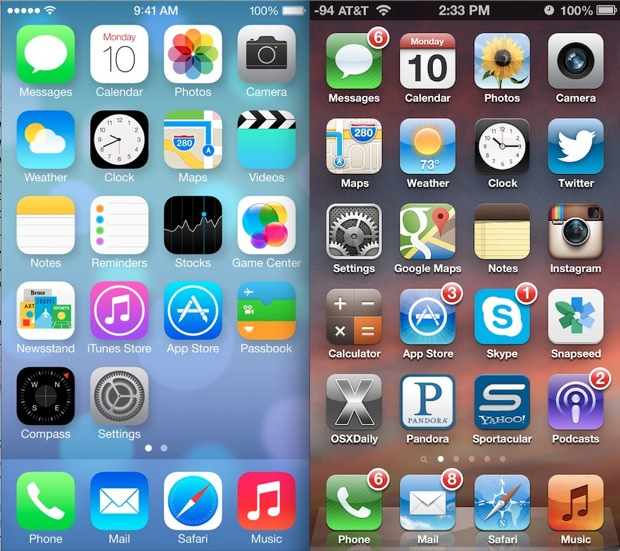
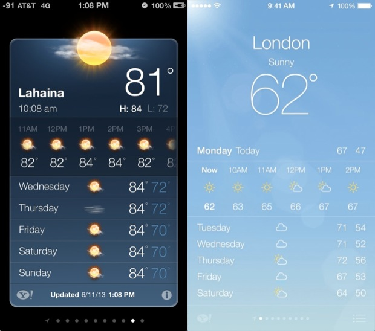

iOS Deep Dive
Titanium Certified Expert (TCE) Training
In this lesson, you will:
- Explore iOS Platform Characteristics
- Explore Key UI and non-UI APIs
 Topic
Topic
Platform Characteristics
Platform Characteristics

iOS 6 vs iOS 7
| iO7 | iOS6 | iO6 | iOS7 | |
|---|---|---|---|---|
|  |  | |||
Source: http://osxdaily.com/2013/06/11/ios-7-vs-ios-6-visual-comparison/
iOS 7 "Flat" Design
- Reduced bevels, shadows, rounding
- Reduced textures, bitmaps &emdash; no more woodgrain or leather
- Depth (and context) provided by layering, subtle shadows, parallax and 3D effects
- Brighter & lighter design &emdash; brighter colors, thinner fonts, line-art iconography
Windows "Extend" to Fill the Screen

Topic
Key UI APIs
iOS6: Navigation Group

A Navigation Group implements a specialized view that manages the navigation of hierarchical content
iOS 7: Navigation Window
- Replaces NavigationGroup
- Is a top-level container (don't put it in a window)
- Add/remove new windows with
push()andpop()
<!-- Titanium.UI.iOS.NavigationWindow -->
<Alloy>
<NavigationWindow id="navwin" platform="ios">
<Window id="win">
<View id="box"/>
</Window>
</NavigationWindow>
</Alloy>
// in associated controller, add a second window
var newWin = Alloy.createController('newWin');
$.navwin.push(newWin.getView());
Navigation Bar
<Alloy>
<Window>
<NavigationGroup>
<Window>
<!-- proxy properties for the window -->
<LeftNavButton>
<Button>Base UI</Button>
</LeftNavButton>
<TitleControl>
<ImageView image="/images/skull.png"/>
</TitleControl>
<!-- rest of the Window markup -->
</Window>
</NavigationGroup>
</Window>
</Alloy>

Toolbars

Toolbars
<Toolbar platform="ios">
<Items>
<Button id="camera"/>
<FlexSpace/>
<TextField id="tf"/>
<FlexSpace/>
<Button id="send"/>
</Items>
</Toolbar>

Keyboard Toolbars
// not supported through Alloy markup yet
// create buttons to go in the tool bar
var camera = Ti.UI.createButton();
$.textfield.keyboardToolbar = [camera, flexSpace, tf, flexSpace, send];
$.textfield.keyboardToolbarColor = '#999';

Button Bar

<ButtonBar platform="ios" onClick="doSomething">
<Labels>
<!-- Specify text with node text or "title" attribute. -->
<Label>One</Label>
<Label title="Two"/>
<Label title="Three"/>
<Label title="Four"/>
<Label title="Five"/>
</Labels>
</ButtonBar>
Tabbed Bar

<TabbedBar platform="ios" onClick="doSomething">
<Labels>
<!-- Specify text with node text or "title" attribute. -->
<Label>One</Label>
<Label title="Two"/>
<Label title="Three"/>
</Labels>
</TabbedBar>
// in the controller
function doSomething(e){
switch(e.index) {
case 0:
// do stuff
break;
}
});
iPad-Specific APIs
Ti.UI.iPad.Popover
Ti.UI.iPad.SplitWindow
Key APIs - Titanium.UI.iPad.Popover
- Transient view revealed by tap on control
- Hovers over app content
<Popover title="Inbox" height="300" width="250">
<LeftNavButton>
<Button onClick="showAlert">My MobileMe Account</Button>
</LeftNavButton>
<RightNavButton>
<Button onClick="showAlert">Edit</Button>
</RightNavButton>
<TableView>...
</Popover>
// view property controls where the
// arrow points
var pop = Alloy.createController('popover').getView();
pop.show({view:$.button});

Key APIs - Titanium.UI.iPad.SplitWindow
- Full-screen, two-pane view
- Left pane fixed at 320 points
- User cannot resize panes

Key APIs - Titanium.UI.iPad.SplitWindow
<Alloy>
<SplitWindow platform="ios" formFactor="tablet">
<!-- The 'masterView' window -->
<Window id="master">
<Label>This is the master</Label>
</Window>
<!-- The 'detailView' window -->
<Window id="detail">
<Label>This is the detail</Label>
</Window>
</SplitWindow>
</Alloy>
SplitWindow is a top-level container; it doesn't go inside a window.
Tab Badge

Communicates status to the user, their attention is needed in part of your app
var tab = Ti.UI.currentTab;
tab.badge = 10; // set the badge
tab.badge = null; // to remove it
App Badge

Ti.UI.iPhone.appBadge = 14;
Ti.UI.iPhone.appBadge = null;
CoverFlow View

<CoverFlowView id="coverflow" platform="ios">
<Images>
<!-- Assign image by node text or image attribute -->
<Image>appc1.png</Image>
<Image image="appc2.png"/>
<!-- you can also change the width/height -->
<Image width="100" height="100" image="appc3.png"/>
<Image width="50" height="50">appc4.png</Image>
</Images>
</CoverFlowView>
Dashboard View
- Springboard-like view
- Use as app home screen
- User can rearrange or remove icons (if you enable it)
- Scrolling container

Dashboard View
<Window>
<RightButton>
<Button id="editButton" onClick="toggleEditMode">Edit</Button>
</RightButton>
</Toolbar>
<DashboardView id="dash" onEdit="handleEdit">
<DashboardItem image="acct_off.png" selectedImage="acct_on.png" label="account"/>
<DashboardItem image="calls_off.png" selectedImage="calls_on.png" label="calls"/>
<DashboardItem image="cases_off.png" selectedImage="cases_on.png" label="cases"/>
<DashboardItem image="tasks_off.png" selectedImage="tasks_on.png" label="tasks"/>
</DashboardView>
</Window>
// in the controller
function toggleEditMode(e) {
isEditable ? $.dash.stopEditing() : $.dash.startEditing();
}
AdView
- Include ads in your app
- Banner or full screen
- Must join Apple's iAd program
- Get test ads only during development

AdView
var iad = Ti.UI.iOS.createAdView({
width: Ti.UI.FILL,
height: Ti.UI.SIZE,
adSize: Ti.UI.iOS.AD_SIZE_PORTRAIT,
bottom: -100
});
iad.addEventListener('load', function(){
iad.animate({
bottom: 0,
duration: 500
});
});
iad.addEventListener('action', function(){
mygame.pause(); // do something when ad is clicked
});
$.win.add(iad);
Topic
Functionality APIs
Background Services
- Extend runtime for limited duration
- Long-running geolocation or music playback
var svc = Ti.App.iOS.registerBackgroundService({
url: 'bg.js'
});
<ios>
<plist>
<dict>
<key>UIBackgroundModes</key>
<array>
<string>audio</string>
<string>location</string>
<string>voip</string>
<string>newsstand-content</string>
<string>external-accessory</string>
<string>bluetooth-central</string>
</array>
</dict>
</plist>
</ios>
Local Notifications
- Runs on device, not push
- Scheduled action
- Background service alert the user
// schedule the notification
Titanium.App.iOS.scheduleLocalNotification({
alertBody:"View Alarm",
alertAction:"You set an alarm",
userInfo:{data: 'Data to pass'},
date:new Date(new Date().getTime() + 3000)
});
// listen for the notification
Ti.App.iOS.addEventListener('notification',
function(e) {
Ti.API.info('Local notification received: '
+ e.data);
});
Push Notifications
- Register with Apple
- Create APNS certificate
- Need fully-qualified app name, not wildcard
- Need server-side to generate notification (e.g. ACS, custom)
Push Notifications - Code
Ti.Network.registerForPushNotifications({
types: [
Ti.Network.NOTIFICATION_TYPE_BADGE,
Ti.Network.NOTIFICATION_TYPE_ALERT
],
success:function(e) {
var deviceToken = e.deviceToken;
Ti.API.info("Push notification device token is: "+deviceToken);
},
error:function(e) {
Ti.API.info("Error during registration: "+e.error);
},
callback:function(e) {
// called when a push notification is received.
var data = JSON.parse(e.data);
if(data.badge > 0) {
Ti.UI.iPhone.appBadge = data.badge;
}
if(data.message) {
alert(data.message);
}
}
});
Network APIs
- Ti.Network.BonjourBrowser
- Ti.Network.BonjourService
- Future: Support for iOS "coalesced" background network updates
Implementing Application Preferences

- Create a Settings Bundle
- Access settings as properties with Ti.App.Properties
- Do clean-build of your project
Creating the Settings Bundle
- Copy KitchenSink/platform/iphone to your project
- In Finder, right-click Settings.bundle and choose Show Package Contents
- Open Root.plist
- Edit as necessary, then save
Topic
Handling iOS 6 and 7 in the same app
Version Detection
if(OS_IOS && parseInt(Ti.Platform.version, 10) >= 7)) {
// iOS 7 code
} else {
// everything else
}
Handling Window Top
// in alloy.js
Alloy.Globals.winTop = (OS_IOS && parseInt(Ti.Platform.version, 10) >= 7) ? 20 : 0;
// then in app.tss
"Window[platform=ios]": {
top: Alloy.Globals.winTop,
...
Handling Status Bar Color
// in alloy.js
Ti.UI.backgroundColor = "#fff"; // sets bar color, text remains black
// if you want a light status bar, get black text with:
$.win.statusBarStyle = Titanium.UI.iPhone.StatusBar.LIGHT_CONTENT; // iOS 7 only
// for an iOS 6 and 7 solution, try
$.win.statusBarStyle = Titanium.UI.iPhone.StatusBar.TRANSLUCENT_BLACK;
<ios>
<plist>
<dict>
<key>UIStatusBarStyle</key>
<string>UIStatusBarStyleLightContent</string>
<key>UIStatusBarHidden</key><true/>
</dict>
</plist>
</ios>
Summary
In this lesson, you:
- Explore iOS Platform Characteristics
- Explore Key UI and non-UI APIs
Q&A
Lab Goals
Add settings to an iOS application